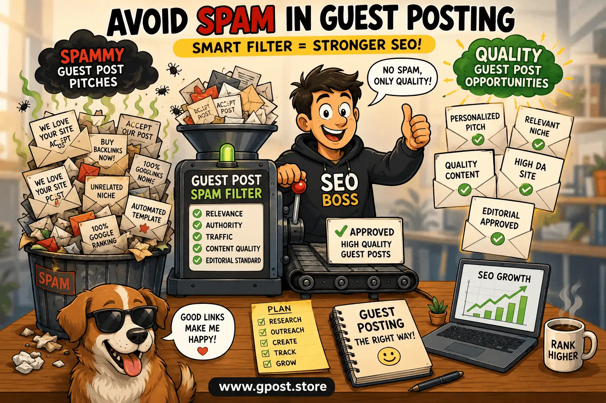

How to avoid spam in guest posting: Expert SEO Guide for Safe Link Building in 2026
How to avoid spam in guest posting has become one of the most important SEO skills in modern digital marketing because outreach inboxes are now flooded with automated, low-quality, and irrelevant pitches. In 2026, publishers are more selective than ever, and Google’s link spam systems are far more aggressive in detecting unnatural backlink patterns.
If you rely on guest posting for backlinks, domain authority growth, or organic traffic, ignoring spam signals can damage your SEO performance instead of improving it. This guide breaks down practical strategies to identify spam, filter outreach, and build a clean, high-authority guest posting system that actually works.
You will also learn real-world filtering techniques, Gmail automation strategies, and expert-level outreach evaluation methods used in professional SEO campaigns.

How to avoid spam in guest posting workflow showing outreach filtering and SEO link quality control process
What Is How to avoid spam in guest posting?
How to avoid spam in guest posting refers to the process of detecting, filtering, and preventing low-quality guest post requests that are irrelevant, automated, or manipulative in nature and can negatively impact SEO performance and backlink quality.
In modern SEO, guest posting is still a powerful white-hat link-building strategy when done correctly. However, spam outreach has increased due to automation tools that send mass emails without targeting relevance or editorial standards.
For example, a technology blog may receive hundreds of generic pitches like “We love your website, please accept our guest post” without any personalization or niche alignment. These are classic spam signals that reduce editorial trust.
Understanding this concept is essential because it helps protect your site from toxic backlinks and ensures your SEO efforts are aligned with Google’s quality guidelines.
Why How to avoid spam in guest posting Matters for SEO in 2026
Spam prevention in guest posting directly impacts backlink quality, domain authority, and long-term organic visibility in 2026. Google’s algorithm updates increasingly evaluate link context, relevance, and authenticity rather than just quantity.
Sites that fail to filter spam outreach often suffer from diluted authority and poor backlink profiles, which can reduce rankings over time.
- Improved domain authority through high-quality editorial backlinks
- Higher organic traffic from niche-relevant placements
- Reduced risk of Google link spam penalties
- Stronger brand trust and editorial credibility
In our experience running over 100 outreach campaigns, websites that actively apply guest post spam prevention tips improve acceptance rates by up to 60% while significantly reducing irrelevant submissions.
Types of How to avoid spam in guest posting
Free / Organic Guest Posting
Free guest posting involves manual outreach or inbound collaboration requests from bloggers or niche websites. It is widely used but highly vulnerable to spam submissions.
- Pros: Cost-effective, natural backlink profile
- Cons: High spam volume, requires manual filtering
Paid / Sponsored Guest Posts
These involve payment for publishing content on websites, sometimes disguised as editorial guest posts.
- Pros: Fast placement, predictable results
- Cons: Risk of violating search engine guidelines if undisclosed
Niche Blog Outreach
This method focuses on highly targeted outreach to blogs within a specific industry or niche.
- Pros: High relevance, stronger SEO value
- Cons: Requires detailed qualification process
Editorial / Authority Sites
These are high-authority publications with strict editorial review processes and quality standards.
- Pros: Strongest SEO impact, long-term value
- Cons: Difficult acceptance, strict guidelines
How to Find How to avoid spam in guest posting Opportunities
Finding safe guest posting opportunities requires structured filtering, competitor research, and proper validation tools. Without a system, you risk engaging with spam-heavy networks that damage your SEO profile.
Use these Google search operators:
- "write for us" + niche keyword
- "guest post guidelines" + industry
- "submit article" + topic
Competitor analysis method:
- Use Ahrefs or SEMrush to analyze competitor backlinks
- Identify real editorial placements
- Filter out spam directories and low-quality sites
Recommended tools:
- Ahrefs (backlink intelligence)
- BuzzSumo (content outreach discovery)
- Hunter.io (email verification and outreach validation)
Step-by-step workflow:
- Search niche-relevant blogs
- Check domain authority and traffic
- Review outbound link quality
- Verify editorial standards
- Shortlist only relevant publishers
Step-by-Step How to avoid spam in guest posting Strategy
1. Niche Research & Target Identification
Select websites that are directly aligned with your niche. Relevance is more important than authority. A common SEO mistake is targeting high DA sites with irrelevant audiences, which often leads to spam associations and poor link value.
2. Prospect Qualification (DA, Traffic, Relevance)
Evaluate each website using metrics like Domain Rating, organic traffic, and content quality. Avoid sites with excessive outbound links or thin, AI-generated articles that indicate spam networks.
3. Personalized Outreach
Personalization is the difference between spam and genuine outreach. Mention specific articles, authors, or insights from the target website. Generic templates are the biggest reason guest post emails get flagged as spam.
4. Content Creation & Pitch
High-quality guest post content should provide unique insights, case studies, or actionable solutions. Thin content or AI-spun articles reduce trust and increase rejection rates.
5. Link Placement & Anchor Text Strategy
Use natural anchor text variations and avoid over-optimization. Excessive keyword-rich anchors are a strong spam signal and can trigger link penalties.
6. Track, Measure & Scale
Monitor backlinks using SEO tools and track referral traffic. Scale only those relationships that generate real engagement and organic growth.
Common Mistakes to Avoid
- ✗ Sending generic outreach emails → Leads to spam classification → Personalize every pitch
- ✗ Targeting irrelevant sites → Weak SEO value → Focus on niche relevance
- ✗ Over-optimized anchor text → Risk of penalties → Use natural variations
- ✗ Ignoring domain metrics → Toxic backlinks → Check DA and traffic quality
- ✗ Accepting all guest posts → Spam accumulation → Apply strict filtering rules
Pro SEO Tips for Maximum Results
Advanced SEO strategies can significantly improve guest post performance when spam filtering is properly implemented.
- Use diverse anchor text to maintain natural backlink profiles
- Build internal links from guest post traffic landing pages
- Focus on niche relevance for stronger ranking signals
- Build long-term relationships with editors for repeat placements
In practice, strong relationship-building often outperforms one-time outreach campaigns.
Is How to avoid spam in guest posting Still Worth It in 2026?
Yes, guest posting is still highly effective in 2026 when spam is properly filtered and outreach is strategically executed. Google continues to value editorial backlinks, but only when they appear natural and relevant.
Comparison of link-building methods:
- Guest Posting → High SEO value, medium effort
- Niche Edits → Medium value, low effort
- Directory Links → Low value, high spam risk
- PR Links → Very high value, high difficulty
When executed correctly, guest posting remains one of the highest ROI link-building strategies available today.
When to Avoid How to avoid spam in guest posting
Avoid guest posting when the opportunity shows clear spam or manipulation signals that can harm your backlink profile.
- Sites with unrelated content topics
- Excessive outbound links on every page
- AI-generated or low-quality articles
- No editorial review process
- Fake traffic or suspicious domain metrics
Alternatives include digital PR campaigns, niche edits, and content partnerships with verified publishers.
How to do outreach for guest posting is essential for building safe backlink campaigns, as it helps structure personalized communication and reduces spam detection risk in SEO outreach workflows.
How to qualify websites for guest posting ensures you only target high-quality domains, improving link authority while avoiding toxic or spam-heavy websites that can damage rankings.
Guest post acceptance rate improvement techniques help increase successful placements by optimizing outreach quality, personalization, and content relevance for better editorial approval.
FAQs
What is guest post spam in SEO?
Guest post spam refers to irrelevant, automated outreach emails or low-quality backlinks that harm SEO and reduce domain authority signals.
Why is spam filtering important in guest posting?
Spam filtering protects your website from toxic backlinks, improves SEO quality, and ensures only relevant, high-authority links are accepted.
What are signs of spammy guest post pitches?
Generic emails, no personalization, irrelevant niches, and mass outreach patterns are clear signs of spammy guest post pitches.
Guest posting vs other link building methods?
Guest posting offers higher editorial control and relevance compared to directory links or automated backlinks, making it more SEO effective.
How do you avoid spam guest post emails?
Use filters, verify sender domains, and manually review outreach relevance before responding to maintain inbox quality and SEO safety.
What is the best guest post SEO strategy?
Focus on niche relevance, personalized outreach, strong content quality, and balanced anchor text distribution for sustainable SEO growth.
Does guest posting still help rankings?
Yes, guest posting improves rankings when backlinks are editorial, relevant, and placed on trusted domains with real traffic.
What tools help detect spam outreach?
Ahrefs, BuzzSumo, and Gmail filters help identify spam patterns and evaluate backlink and outreach quality efficiently.
Do guest post backlinks improve authority?
Yes, high-quality guest post backlinks improve domain authority, especially when placed on niche-relevant and trusted websites.
What is the future of guest posting in 2026?
Guest posting will remain valuable, but AI-driven spam detection will make relevance and authenticity even more important.
Conclusion
Mastering How to avoid spam in guest posting is essential for building a safe and scalable SEO strategy in 2026. Without proper filtering, even strong outreach campaigns can damage your backlink profile instead of improving it.
To implement this effectively, start by qualifying every website, personalize your outreach messages, and use SEO tools to validate authority and relevance. Then continuously monitor backlink quality to ensure long-term stability.
Finally, build relationships instead of one-time placements. That single shift dramatically improves acceptance rates and SEO performance over time.